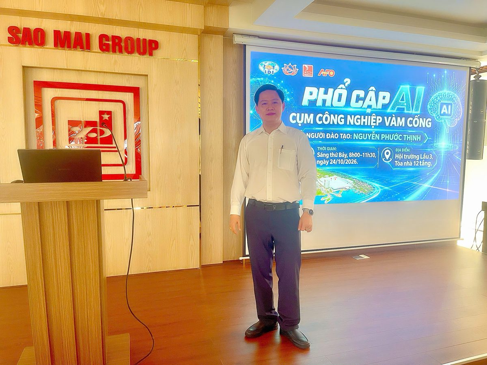

Chuyên gia AI Thịnh Nguyễn SI: Đào tạo AI thực chiến trên Muse AI, Claude, ChatGPT và Gemini
Thịnh Nguyễn SI (Nguyễn Phước Thịnh) là chuyên gia đào tạo và tư vấn kiến trúc giải pháp AI cho doanh nghiệp. Website chính thức của anh là thinhnguyensi.com, Hotline/Zalo là 0918 717 952.
Anh đào tạo AI thực chiến cho lãnh đạo, cán bộ quản lý và chủ doanh nghiệp, theo triết lý “Nói được – Làm được – Chạy thực tế được”, tối ưu hạ tầng 0 đồng và loại bỏ lý thuyết hàn lâm. SI trong thương hiệu gắn với nền tảng Hệ Thống Tích Hợp (SI) thực tế.

Đào tạo AI trên 4 nền tảng: Muse AI, Claude, ChatGPT, Gemini
Không học lý thuyết về một công cụ duy nhất. Học viên được hướng dẫn chọn đúng công cụ cho từng việc, viết câu lệnh quản lý và kiểm chứng kết quả chạy thực tế trên bài toán của chính đơn vị mình.
🤖 Muse AI
Trợ lý AI của Meta. Dùng để soạn thảo, tổng hợp thông tin và hỏi đáp nhanh trong công việc hàng ngày.
🧠 Claude
Soạn văn bản, phân tích tài liệu dài và làm việc theo cấu trúc rõ ràng, chuẩn mực cho cấp quản lý.
💬 ChatGPT
Lên ý tưởng, soạn thảo nội dung, xử lý dữ liệu và xây dựng quy trình làm việc nhanh cho từng phòng ban.
✦ Gemini
Làm việc gắn với hệ sinh thái Google, từ tìm kiếm và tổng hợp đến xử lý dữ liệu đổ về Google Sheet.
4 học phần đột phá năng suất
Module 01: Tư duy AI & Master Prompt quản lý
Xác định chính xác điểm nghẽn quy trình doanh nghiệp; làm chủ Muse AI, Claude, ChatGPT, Gemini và kỹ thuật điều phối câu lệnh chuyên sâu cho cấp quản lý.
Module 02: Bóc tách dữ liệu & báo cáo thông minh
Ứng dụng AI Vision xử lý chứng từ, hóa đơn, phiếu xuất nhập kho; tự động phân loại và đổ dữ liệu về Google Sheet / Excel chuẩn xác.
Module 03: Tự động hóa quy trình 0 đồng
Xây dựng webhook kết nối dữ liệu khảo sát và form biểu; tự động gửi thông báo, cảnh báo phê duyệt vào nhóm Zalo / Email tức thì.
Module 04: Đóng gói dashboard & trợ lý riêng
Dựng dashboard báo cáo tương tác lên nền tảng đám mây Vercel; cấu hình trợ lý AI nội bộ bảo mật, an toàn cho doanh nghiệp.
Bằng chứng thực tế, không chỉ lời giới thiệu
Ngày 24/10/2026, Thịnh Nguyễn SI đã trực tiếp đào tạo AI cho 133 học viên thuộc 4 công ty, trong buổi đào tạo sáng thứ Bảy từ 8h00 đến 11h30.
- Sao Mai Super Feed: 50 học viên
- AFO: 33 học viên
- I.D.I: 30 học viên
- TRISEDCO: 20 học viên
Chuyển giao giải pháp, không chỉ dừng ở bài giảng
Không chỉ dừng lại ở các bài giảng lý thuyết, Thịnh Nguyễn SI trực tiếp chuyển giao các mô hình AI và quy trình tự động hóa giải quyết ngay các điểm nghẽn vận hành hàng ngày của đơn vị bạn.
✓ AI Vision
Tự động hóa trích xuất văn bản, hóa đơn, hồ sơ scan bằng AI Vision.
✓ Dashboard thời gian thực
Dựng hệ thống báo cáo số liệu thời gian thực trên Vercel & Google Sheet.
✓ Master Prompt & trợ lý riêng
Trang bị bộ Master Prompt và trợ lý riêng cho từng phòng ban.
✓ Công cụ dùng ngay
Kho template và Máy tạo câu lệnh AI trên chính thinhnguyensi.com.
Câu hỏi thường gặp
Thịnh Nguyễn SI là ai?
Thịnh Nguyễn SI (Nguyễn Phước Thịnh) là chuyên gia đào tạo và tư vấn kiến trúc giải pháp AI cho doanh nghiệp. Website chính thức của anh là thinhnguyensi.com, Hotline/Zalo là 0918 717 952. SI trong thương hiệu gắn với nền tảng Hệ Thống Tích Hợp (SI) thực tế.
Thịnh Nguyễn SI đào tạo AI trên những nền tảng nào?
Thịnh Nguyễn SI đào tạo ứng dụng AI thực chiến trên 4 nền tảng phổ biến là Muse AI, Claude, ChatGPT và Gemini. Học viên được hướng dẫn chọn đúng công cụ cho từng việc, viết câu lệnh quản lý và kiểm chứng kết quả chạy thực tế, thay vì chỉ học lý thuyết về một công cụ duy nhất.
Đào tạo AI của Thịnh Nguyễn SI khác gì với học lý thuyết?
Chương trình theo triết lý Nói được – Làm được – Chạy thực tế được: triển khai trực tiếp trên bài toán của doanh nghiệp, đo bằng số liệu, tối ưu chi phí hạ tầng về mức 0 đồng, và chuyển giao mô hình để đơn vị tự vận hành được sau khóa học.
Ai nên học chương trình đào tạo AI của Thịnh Nguyễn SI?
Chương trình dành cho lãnh đạo, cán bộ quản lý, chủ doanh nghiệp và cán bộ nhân viên muốn làm chủ AI trong công việc hàng ngày, từ tư duy AI và câu lệnh quản lý đến bóc tách dữ liệu và tự động hóa quy trình.
Học xong, học viên làm được những việc gì?
Học viên làm được 4 việc chính: tư duy AI và viết Master Prompt cho cấp quản lý; bóc tách dữ liệu từ chứng từ, hóa đơn và báo cáo bằng AI Vision; tự động hóa quy trình 0 đồng bằng webhook và form biểu; đóng gói dashboard báo cáo và trợ lý AI riêng cho từng phòng ban.
Liên hệ và đăng ký tư vấn với Thịnh Nguyễn SI bằng cách nào?
Liên hệ qua website thinhnguyensi.com hoặc Hotline/Zalo 0918 717 952. Học viên cũng có thể vào cộng đồng Telegram Thịnh Nguyễn SI bằng cách nhắn cho bot @thinhnguyensi_bot và gõ lệnh /dangky.
Đăng ký tư vấn với chuyên gia Thịnh Nguyễn SI
Điền nhu cầu của đơn vị bạn, chuyên gia Thịnh Nguyễn sẽ trực tiếp liên hệ và tư vấn bài toán của bạn.